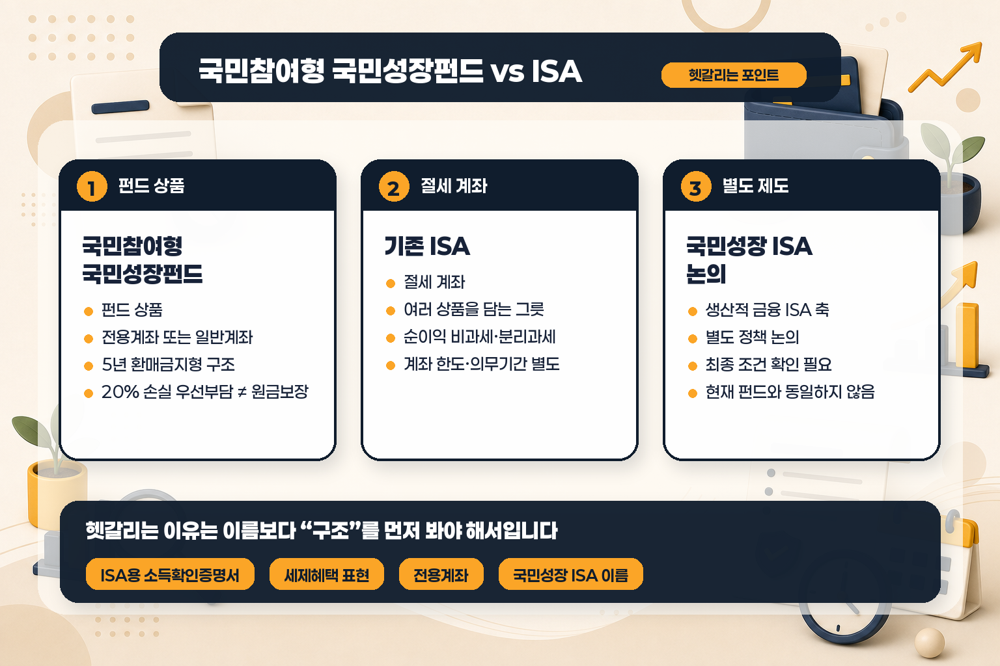
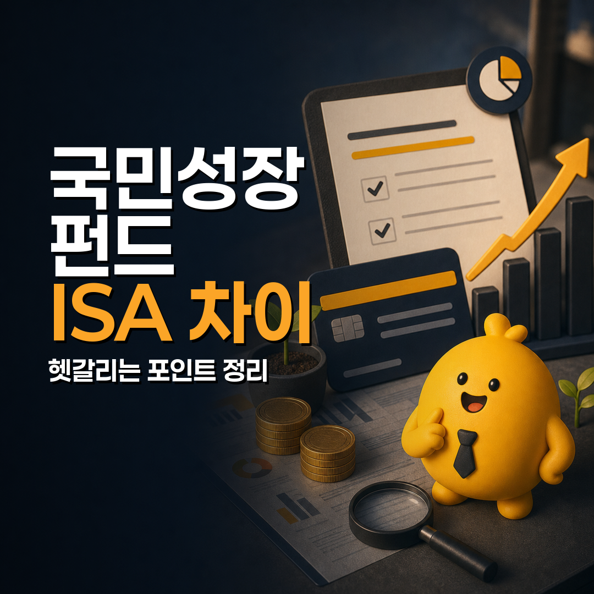

국민참여형 국민성장펀드, ISA와 헷갈리는 포인트 정리
기준일: 2026년 5월 29일
먼저 결론부터 정리하면, 국민참여형 국민성장펀드는 ISA 계좌가 아닙니다. 이름에 ‘국민성장’이 들어가고, 가입할 때 ISA 가입용 소득확인증명서를 내야 하는 경우가 있어서 헷갈리기 쉽지만, 구조는 다릅니다.
국민참여형 국민성장펀드는 일반 국민이 첨단산업 투자에 간접 참여하도록 만든 펀드 상품입니다. 반면 기존 ISA는 예금·펀드·ETF·주식 등을 담을 수 있는 절세 계좌, 즉 금융상품을 담는 그릇에 가깝습니다. 또 최근 거론되는 ‘국민성장 ISA’는 생산적 금융 ISA 논의의 한 축으로, 현재 판매되는 국민참여형 펀드와 같은 상품으로 보면 안 됩니다.
이 글은 특정 상품 가입을 권하는 글이 아니라, 이름과 세제 혜택 때문에 ISA와 혼동되는 지점을 공식 자료 기준으로 정리한 글입니다.
한눈에 보면: 펀드, 기존 ISA, 국민성장 ISA 논의는 이렇게 다릅니다
| 구분 | 국민참여형 국민성장펀드 | 기존 ISA | 국민성장 ISA·생산적 금융 ISA 논의 |
|---|---|---|---|
| 성격 | 첨단산업 등에 간접 투자하는 펀드 상품 | 여러 금융상품을 담는 절세 계좌 | ISA 제도 확대·개편 논의 |
| 가입 구조 | 국민참여성장펀드에 투자하는 전용계좌 또는 일반계좌 | ISA 계좌 안에서 상품 선택 | 최종 제도·상품 조건 확인 필요 |
| 세제 포인트 | 투자금액별 소득공제, 배당소득 분리과세 등 | 순이익 비과세 한도와 초과분 분리과세 | 기존 ISA보다 혜택을 강화하는 방향으로 논의 |
| 유동성 | 만기 5년의 환매금지형 펀드, 중도 환매 불가 | ISA 의무가입기간·계좌 규칙에 따름 | 아직 최종 상품 조건과 시행 방식 확인 필요 |
| 헷갈리는 이유 | ISA 가입용 소득확인증명서를 제출할 수 있음 | 이름 자체가 ISA | ‘국민성장’이라는 이름이 겹침 |

핵심은 단순합니다. 국민참여형 국민성장펀드는 “상품”, ISA는 “계좌”, 국민성장 ISA는 “별도 논의 중인 제도 이름”으로 구분해서 봐야 합니다.
1. 왜 ISA와 헷갈릴까요?
가장 큰 이유는 세 가지입니다.
- 가입 서류에 소득확인증명서(개인종합자산관리계좌 가입용)이라는 표현이 등장합니다.
- 서민형 ISA 요건과 같은 소득 기준 표현이 함께 나옵니다.
- ‘국민성장 ISA’라는 별도 정책 논의가 있어 이름이 비슷합니다.
금융위원회 보도자료는 국민참여성장펀드 가입 시 소득증빙 서류로 ISA 가입용 소득확인증명서 또는 증명서 발급번호를 제출해야 한다고 설명합니다. 다만 여기서 중요한 점은, 서류 이름이 ISA용이라고 해서 해당 펀드가 ISA 계좌 안에서만 가입되는 상품이라는 뜻은 아니라는 점입니다.
공식 자료상 국민참여성장펀드는 세제지원을 받기 위해 국민참여성장펀드에만 투자하는 전용계좌를 통한 가입이 필요하다고 설명됩니다. 즉, 혼동 지점은 “서류명”과 “세제 요건”에서 생기는 것이지, 기존 ISA와 동일한 계좌라는 뜻은 아닙니다.
2. 국민참여형 국민성장펀드는 어떤 구조인가요?
금융위원회 자료 기준으로 국민참여형 국민성장펀드는 국민 모집액 6,000억 원과 손실 우선부담 목적의 재정 1,200억 원을 합쳐 총 7,200억 원 조성을 목표로 한 구조입니다. 국민이 낸 자금은 공모펀드를 거쳐 여러 자펀드에 분산 투자되는 방식으로 설명됩니다.
판매 관련 핵심 조건도 확인해야 합니다.
| 항목 | 공식 자료 기준 확인점 |
|---|---|
| 판매 시작 | 2026년 5월 22일 출시 |
| 판매 기간 | 2026년 6월 11일까지 3주간 판매 예정, 물량 소진 시 조기마감 가능 |
| 모집 규모 | 국민 모집액 6,000억 원 |
| 판매 채널 | 지정된 은행 10개사, 증권사 15개사 |
| 보유 구조 | 만기 5년의 환매금지형 펀드 |
| 중도 환매 | 5년간 중도 환매 불가. 거래소 상장 후 양도 가능하더라도 유동성·가격 차이를 유의해야 함 |
| 세제 주의 | 투자 후 3년 이내 양도 시 감면세액 상당액 추징 가능 |
특히 2026년 5월 26일 17시 기준으로는 전체 모집금액 6,000억 원 중 약 5,850억 원, 즉 약 97.5%가 판매됐다는 보도참고자료도 나왔습니다. 따라서 2026년 5월 29일 현재 실제 가입 가능 여부와 잔여 물량은 판매사별로 다시 확인해야 합니다.
3. 20% 손실 우선부담은 원금보장과 다릅니다
국민참여형 국민성장펀드에서 많이 보이는 표현 중 하나가 20% 손실 우선부담입니다. 공식 자료는 후순위 출자분인 재정 1,200억 원이 국민투자금 대비 20% 수준으로 들어가며, 각 자펀드별로 20% 범위에서 손실을 우선 부담하는 구조라고 설명합니다.
여기서 조심할 점은, 이 문구를 개인별 원금보장으로 읽으면 안 된다는 것입니다. 손실 우선부담은 펀드 구조상 손실 흡수 순서를 설명하는 장치입니다. 투자자가 실제로 어떤 손익을 보게 되는지는 투자대상, 펀드 기준가, 거래 유동성, 매도 시점, 세제 요건 등에 따라 달라집니다.
따라서 확인할 문장은 다음처럼 나뉩니다.
| 잘못 읽기 쉬운 문장 | 더 정확한 해석 |
|---|---|
| 정부가 20%를 막아주니 원금은 안전하다 | 후순위 출자 구조가 있지만 원금보장 문구가 아니다 |
| 5년만 들고 있으면 확정 혜택이다 | 세제 혜택, 손익, 환금성 조건을 모두 확인해야 한다 |
| ISA 서류를 내니 ISA와 같은 계좌다 | 소득 확인을 위한 서류명일 뿐 구조는 별도 펀드다 |
4. 기존 ISA와는 무엇이 다른가요?
기존 ISA는 개인종합자산관리계좌입니다. 국회예산정책처 자료는 ISA를 2016년 자산형성 지원 목적으로 도입된 계좌로 설명하며, 투자중개형 ISA 도입 이후 가입자 수와 가입금액이 크게 늘었다고 정리합니다.
기존 ISA를 이해할 때 중요한 포인트는 “상품 하나”가 아니라 “계좌”라는 점입니다. ISA 안에는 유형에 따라 예금, 펀드, ETF, 국내 상장주식 등 여러 금융상품이 담길 수 있습니다. 세제 혜택도 계좌 안에서 발생한 순이익을 기준으로 계산하는 구조입니다.
반면 국민참여형 국민성장펀드는 특정 투자 목적과 운용 구조를 가진 펀드입니다. 세제 혜택이 있다는 점은 비슷하게 느껴질 수 있지만, 비교 기준은 전혀 다릅니다.
| 비교 기준 | 국민참여형 국민성장펀드에서 볼 점 | 기존 ISA에서 볼 점 |
|---|---|---|
| 무엇을 사는가 | 국민참여성장펀드라는 펀드 상품 | 계좌 안에 담을 금융상품 조합 |
| 자금이 묶이는가 | 5년 환매금지형 구조, 중도 환매 불가 | ISA 의무기간·중도인출·해지 규칙 확인 |
| 세제 혜택 계산 | 투자금액별 소득공제와 배당소득 분리과세 등 공식 요건 확인 | 비과세 한도, 초과분 분리과세, 손익통산 구조 확인 |
| 위험 확인 | 펀드 투자위험, 비상장·첨단산업 투자, 유동성 확인 | 계좌 안에 담는 상품별 위험 확인 |
| 선택의 폭 | 해당 펀드 구조 안에서 선택 | 계좌 유형과 편입 상품 선택 폭 확인 |
즉 “둘 중 무엇이 더 좋다”가 아니라, 비교 대상 자체가 다릅니다. 하나는 투자 상품이고, 하나는 절세 계좌입니다.
5. 국민성장 ISA와도 같은 말이 아닙니다
국회예산정책처의 ISA 쟁점 자료에는 정부가 국내 주식 장기투자 촉진을 위해 생산적 금융 ISA를 신설하고, 그 일환으로 청년형 ISA와 국민성장 ISA 도입을 추진할 계획이라는 내용이 나옵니다.
이 부분 때문에 검색할 때 더 헷갈립니다. 하지만 현재 판매된 국민참여형 국민성장펀드와, 앞으로 제도화될 수 있는 국민성장 ISA는 구분해야 합니다.
정리하면 이렇게 볼 수 있습니다.
- 국민참여형 국민성장펀드: 2026년 5월 22일부터 판매된 펀드 상품.
- 기존 ISA: 이미 운영 중인 개인종합자산관리계좌 제도.
- 국민성장 ISA: 생산적 금융 ISA 논의 안에서 언급되는 별도 정책 방향.
국민성장 ISA는 최종 법령, 시행일, 가입요건, 세제혜택, 편입 가능 상품이 확정되는 시점에 다시 확인해야 합니다. 이름이 비슷하다는 이유만으로 현재 펀드 가입과 같은 선택지로 묶으면 판단이 흐려질 수 있습니다.
6. 조건별로 보면 이렇게 나뉩니다
5년 안에 자금이 필요할 가능성이 큰 경우
국민참여형 국민성장펀드는 만기 5년의 환매금지형 펀드입니다. 거래소 상장 후 양도가 가능하더라도, 유동성이 낮거나 기준가격보다 낮은 가격으로 거래될 가능성이 언급됩니다. 따라서 5년 안에 쓸 돈이라면 구조를 더 신중하게 봐야 합니다.
세제 계좌를 유연하게 활용하고 싶은 경우
기존 ISA의 핵심은 계좌 안에 어떤 상품을 담을지 선택할 수 있다는 점입니다. 펀드 하나에 투자하는 것보다 계좌 활용 범위와 상품 선택 폭을 더 중요하게 본다면 기존 ISA의 규칙, 한도, 편입 가능 상품을 따로 비교해야 합니다.
첨단산업 투자에 간접 참여하는 정책형 펀드 구조를 보려는 경우
국민참여형 국민성장펀드는 첨단전략산업기업과 관련 기업에 자금을 공급하는 정책 목표를 가진 펀드입니다. 다만 정책 목표가 있다고 해서 수익이 확정되는 것은 아닙니다. 자펀드 투자전략, 보수, 환금성, 투자설명서상 위험을 같이 봐야 합니다.
국민성장 ISA를 기다리는 경우
국민성장 ISA는 현재 판매된 국민참여형 펀드와 같은 상품으로 단정하면 안 됩니다. 최종 제도 설계와 세법 개정 내용이 확정된 뒤, 기존 ISA와 어떤 점이 달라지는지 따로 확인하는 것이 안전합니다.
가입 전 체크리스트
- ☐ 내가 보려는 것이 펀드 상품인지, ISA 계좌인지 먼저 구분했는가?
- ☐ ISA 가입용 소득확인증명서라는 서류명 때문에 같은 계좌라고 오해하지 않았는가?
- ☐ 5년 환매금지형 구조와 중도 양도 시 유동성·가격 위험을 확인했는가?
- ☐ 20% 손실 우선부담을 원금보장으로 받아들이지 않았는가?
- ☐ 2026년 5월 26일 기준 판매율이 97.5%였으므로 잔여 물량을 판매사에 확인했는가?
- ☐ 국민성장 ISA는 별도 논의라는 점을 구분했는가?
- ☐ 공식 보도자료, 투자설명서, 판매사 설명자료의 기준일을 확인했는가?
자주 묻는 질문
Q1. 국민참여형 국민성장펀드는 ISA 계좌인가요?
아닙니다. 공식 자료상 국민참여성장펀드는 전용계좌 또는 일반계좌를 통해 가입하는 펀드 상품으로 설명됩니다. 기존 ISA와 이름·서류·세제 표현이 일부 겹치지만 같은 구조로 보면 안 됩니다.
Q2. 왜 ISA 가입용 소득확인증명서를 내야 하나요?
공식 자료는 판매 물량과 서민 전용 물량 관리를 위해 가입 시 소득증빙 서류를 제출해야 한다고 설명합니다. 이때 사용하는 서류가 소득확인증명서(개인종합자산관리계좌 가입용)입니다. 서류명 때문에 ISA 안에서만 가입되는 상품이라고 단정하면 안 됩니다.
Q3. 20% 손실 우선부담이면 손실이 안 나나요?
그렇게 단정하면 안 됩니다. 후순위 출자 구조는 손실을 부담하는 순서를 설명하는 장치이지, 개인 투자자별 수익이나 원금을 보장하는 표현이 아닙니다. 투자설명서와 판매사 설명자료에서 원금손실 가능성, 보수, 환금성, 세제 조건을 확인해야 합니다.
Q4. 기존 ISA를 가지고 있어도 이 펀드를 볼 수 있나요?
기존 ISA 보유 여부만으로 판단할 사안은 아닙니다. 국민참여성장펀드는 별도 전용계좌와 가입요건, 판매사별 물량, 세제 요건을 확인해야 합니다. 또한 판매 물량이 빠르게 소진됐으므로 실제 가능 여부는 판매사 확인이 필요합니다.
Q5. 국민성장 ISA가 나오면 이 펀드와 같은 건가요?
같은 말로 보면 안 됩니다. 국민성장 ISA는 생산적 금융 ISA 논의에서 언급되는 별도 제도 방향입니다. 최종 시행 내용이 확정되면 기존 ISA, 국민성장 ISA, 국민참여형 펀드를 다시 구분해서 비교해야 합니다.
마무리 정리
이번 글의 핵심은 “좋다/나쁘다”가 아니라 분류를 정확히 하는 것입니다. 국민참여형 국민성장펀드는 ISA가 아니라 펀드 상품입니다. 기존 ISA는 절세 계좌이고, 국민성장 ISA는 별도 정책 논의입니다.
세제 혜택, 소득확인증명서, 국민성장이라는 이름이 겹치기 때문에 검색할수록 헷갈릴 수 있습니다. 하지만 실제 확인 순서는 간단합니다.
- 이것이 계좌인지 상품인지 구분한다.
- 기준일과 공식 출처를 확인한다.
- 세제 혜택보다 먼저 자금 묶임, 위험, 환금성을 본다.
- 최종 가입·매수 전에는 판매사 투자설명서와 공식 공지를 다시 확인한다.
이 글은 일반 정보 정리이며 투자·세무·법률 자문이 아닙니다. 실제 가입, 매수, 양도, 세제 적용 여부는 개인 상황과 상품별 약관에 따라 달라질 수 있으므로 공식 자료와 판매사 설명자료를 확인하세요.
참고한 공식 자료
- 금융위원회 보도자료: 「국민참여형 국민성장펀드」가 5월 22일 출시됩니다
- 금융위원회 보도자료: 투자구조와 우선 손실 부담의 구체적 내용
- 금융위원회 보도참고: 판매 결과 잔여물량 현황(5.26일)
- 국회예산정책처 NABO Focus: 개인종합자산관리계좌(ISA)의 국내외 현황 및 쟁점
